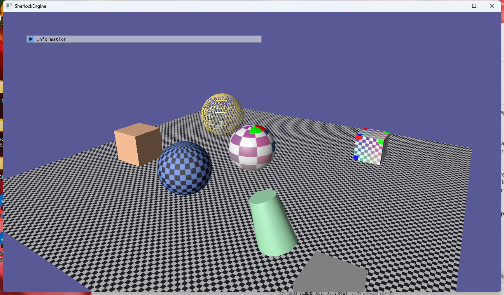
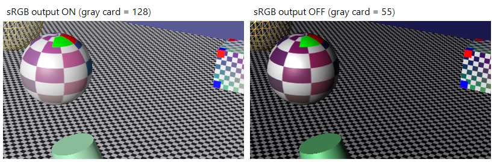
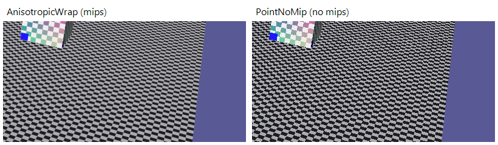
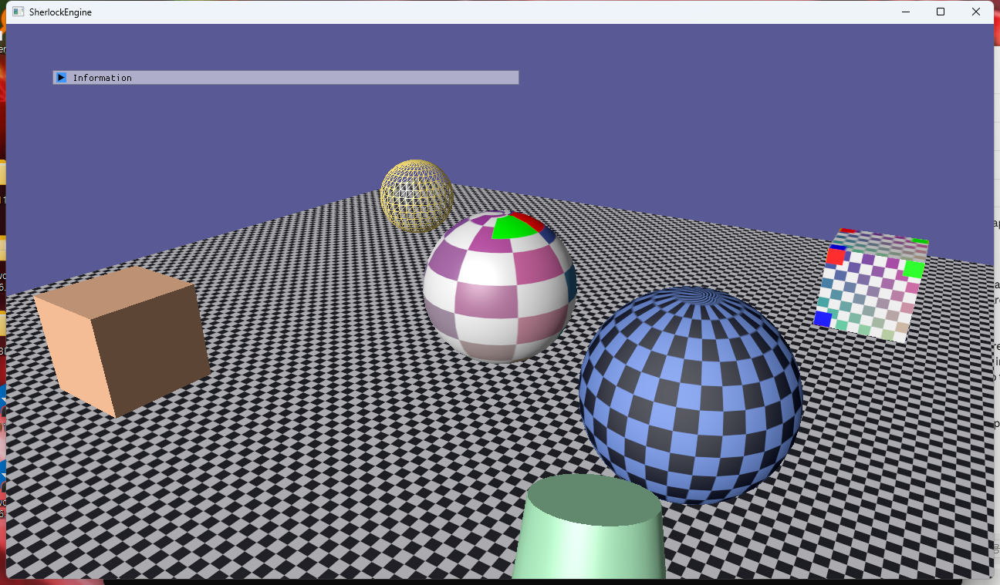
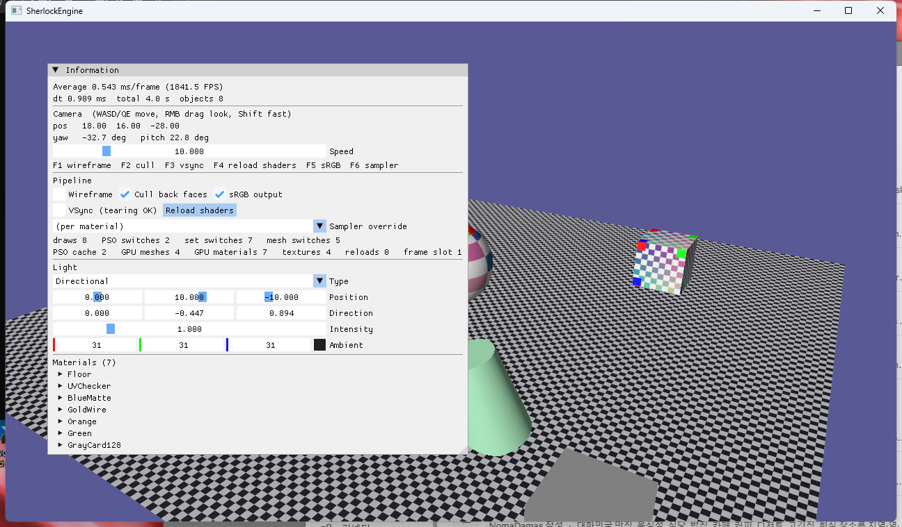

5단계 · 텍스처와 색공간
3단계의 Texture 래퍼를 실제 에셋으로 채우고 감마를 잡은 단계입니다. 정점에 UV가 붙고, WIC/DDS 로더가 밉 체인을 CPU에서 만들어 올리고, SamplerDesc가 핸들이 되고, 재질 ResourceSet에 t0·s0이 들어갑니다. 스왑체인은 flip 모델로 바뀌었고 백버퍼는 UNORM으로 만들되 sRGB 뷰에 그립니다. 조명 계산은 이제 선형 공간에서 일어나고, 화면에 나가는 순간에만 인코딩됩니다. "sRGB 128 회색을 조명 없이 그리면 화면 픽셀이 128이어야 한다"는 검사로 전 과정을 수치로 확인했습니다.
텍스처 바이트는 파일에 든 그대로(sRGB 인코딩)이고, *_SRGB 포맷은 "샘플할 때 풀어라"는 라벨입니다. 셰이더는 선형 값으로 조명을 계산하고, 백버퍼의 sRGB 뷰가 쓰는 순간 다시 인코딩합니다. 이 두 지점 사이에 있는 모든 것(정점 색, 재질 색, 클리어 색, 조명)은 선형입니다. ImGui만 예외라 UNORM 뷰에 따로 그립니다. 밉맵은 D3D12에 GenerateMips가 없으므로 CPU(DirectXTex)에서 만들어 초기 데이터로 올리고, 그 배열(TextureSubresource[])이 D3D12의 업로드 힙 경로와 같은 모양이 되게 했습니다.
1.요약
| 항목 | 4단계까지 | 5단계 |
|---|---|---|
| 정점 | VERTEX 40B (pos·color·normal) | 48B, u,v 추가. VertexFormat::PositionColorNormalTexcoord, 4개 속성 |
| 텍스처 생성 | CreateTexture(desc) — 빈 텍스처만(백버퍼·깊이) | CreateTexture(desc, subresources, count) — 밉 레벨마다 {data, rowPitch} |
| 로더 | 없음 | TextureLoader: WIC(PNG/JPG/BMP…)·DDS, R8G8B8A8로 통일, CPU 밉 생성, 절차적 체커·단색 |
| 샘플러 | 없음 (셰이더에 SamplerState 없음) | SamplerDesc → SamplerHandle. 프리셋 5개, ResourceSet 슬롯 타입 Sampler 지원 |
| 재질 셋 | b3 (PS) | b3 (VS|PS) · t0 (PS) · s0 (PS). 텍스처·샘플러가 바뀌면 셋 재생성 |
| 재질 | baseColor·specular·shininess·wireframe·doubleSided | + albedoTexture(이름), albedoSrgb, sampler, uvScale, unlit |
| 스왑체인 | D3D11CreateDeviceAndSwapChain, DISCARD(blt) | CreateSwapChainForHwnd, FLIP_DISCARD, tearing 확인, NO_ALT_ENTER |
| 색공간 | 전부 UNORM. 조명 결과가 그대로 화면으로(감마 무시) | 텍스처 sRGB 라벨, 백버퍼 sRGB 뷰, 선형 조명. 토글(F5)로 비교 가능 |
| UI 패스 | ImGui가 씬과 같은 RTV에 | BeginUIPass(): 백버퍼 UNORM 뷰, 깊이 없음 |
| 디버그 UI | — | sRGB 토글, 샘플러 덮어쓰기 콤보, 텍스처 수, 재질별 샘플러·UV 배율·unlit. F5·F6 |
2.색공간: 왜 선형에서 계산하는가
2.1 sRGB 전달 함수와 "두 번 어두워지기"
PNG에 저장된 128은 "밝기 50%"가 아닙니다. sRGB는 사람 눈이 어두운 쪽에 민감한 것을 이용해 8비트를 어두운 쪽에 더 배정하는 인코딩이고, 전달 함수는 다음과 같습니다3.
// sRGB(0..1) → 선형
linear = srgb / 12.92 (srgb ≤ 0.04045)
linear = ((srgb + 0.055) / 1.055) ^ 2.4 (그 외)
// 128/255 = 0.502 → 0.2158. 즉 "128 회색"은 물리적으로 21.6% 밝기다.조명은 물리량의 덧셈과 곱셈입니다. 인코딩된 값끼리 더하고 곱하면 결과는 인코딩된 값도 선형 값도 아닌 것이 됩니다. 그래서 GPU Gems 3의 24장은 "모든 계산은 선형에서, 화면에 낼 때만 인코딩"을 원칙으로 세웁니다2. Microsoft의 지침도 같습니다: 부동소수점 연산은 선형에서, 화면에는 sRGB로1.
4단계까지의 우리 엔진은 이 원칙을 어겼습니다. 정점 색·재질 색을 그대로 조명에 넣고, 결과를 UNORM 백버퍼에 그대로 썼습니다. 텍스처가 없어서 "인코딩된 값을 선형으로 오해"하는 첫 번째 오류는 없었지만, "선형 결과를 인코딩 없이 화면에" 내는 두 번째 오류가 있었습니다. 그림 2의 오른쪽(sRGB 끔)이 그 결과입니다. 회색 카드 128이 55로 나옵니다 — 0.2158 × 255 = 55. 화면은 그 값을 sRGB로 해석하므로 실제 밝기는 3.8%가 됩니다. 이것이 "두 번 어두워지기"입니다.
2.2 SRV와 RTV의 _SRGB 뷰
변환은 셰이더 코드가 아니라 하드웨어가 합니다. DXGI_FORMAT_R8G8B8A8_UNORM_SRGB 텍스처를 Sample하면 필터링 전에 각 텍셀이 선형으로 풀리고, 같은 포맷의 RTV에 픽셀 셰이더가 출력하면 블렌딩 뒤에 인코딩됩니다1. 셰이더는 아무것도 모릅니다. 그래서 BasicPixelShader.hlsl의 조명 코드는 4단계와 한 줄도 다르지 않고, 텍스처 샘플 한 줄만 늘었습니다.
// Common.hlsli — 재질 셋의 t0 / s0
Texture2D albedoTexture : register(t0);
SamplerState albedoSampler : register(s0);
// BasicPixelShader.hlsl — 여기서부터 모든 색은 선형이다
const float4 texel = albedoTexture.Sample(albedoSampler, input.uv);
const float4 surface = input.col * baseColor * texel;
if (unlit > 0.5f) return float4(surface.rgb, surface.a); // 감마 검증용백버퍼 쪽에는 제약이 하나 있습니다. flip 모델 스왑체인은 백버퍼 포맷으로 *_SRGB를 받지 않습니다 — 허용 포맷은 R16G16B16A16_FLOAT, B8G8R8A8_UNORM, R8G8B8A8_UNORM, R10G10B10A2_UNORM 뿐입니다7. 대신 문서가 명시한 예외가 있습니다: UNORM으로 만든 스왑체인 백버퍼에 *_SRGB RTV를 만들 수 있다. 보통 뷰 포맷을 리소스 포맷과 다르게 하려면 리소스가 TYPELESS여야 하는데, 백버퍼만 이 규칙에서 면제됩니다1. D3D11Texture가 두 RTV를 지연 생성합니다20.
// D3D11Resources.h — 같은 백버퍼의 UNORM 뷰와 sRGB 뷰
ID3D11RenderTargetView* GetRTV(ID3D11Device* device, bool srgbView = false)
{
ComPtr<ID3D11RenderTargetView>& target = srgbView ? rtvSrgb : rtv;
if (!target)
{
if (srgbView)
{
D3D11_RENDER_TARGET_VIEW_DESC viewDesc = {};
viewDesc.Format = ToSrgb(D3D11Convert::ToDXGI(desc.format)); // R8G8B8A8_UNORM → _UNORM_SRGB
viewDesc.ViewDimension = D3D11_RTV_DIMENSION_TEXTURE2D;
device->CreateRenderTargetView(texture.Get(), &viewDesc, target.GetAddressOf());
}
else device->CreateRenderTargetView(texture.Get(), nullptr, target.GetAddressOf());
}
return target.Get();
}Device::BeginFrame은 m_srgbOutput에 따라 둘 중 하나를 바인딩하고 클리어합니다. 클리어 색 (0.1, 0.1, 0.3)은 선형 값이고, sRGB 뷰를 클리어하면 인코딩된 (89, 89, 149)가 저장됩니다. 2.4절의 측정값이 정확히 이 숫자입니다.
2.3 ImGui는 UNORM 뷰에
Dear ImGui는 스타일 색을 sRGB로 인코딩된 값으로 취급하고, 렌더러 백엔드는 그것을 그대로 출력합니다. 선형/sRGB 프레임버퍼 문제는 오래된 이슈이고 라이브러리 차원의 해법은 아직 없습니다19. sRGB 뷰에 ImGui를 그리면 인코딩된 값이 한 번 더 인코딩되어 패널이 희게 떠 보입니다. 그래서 AppBase::Run이 씬 렌더 뒤에 Device::BeginUIPass()를 부르고, 그것이 백버퍼의 UNORM 뷰를 깊이 없이 바인딩합니다. 6단계의 RenderPassDesc가 생기면 "UI 패스"는 그 첫 번째 사용자가 됩니다.
// AppBase.cpp
graphicsDevice.BeginFrame(); // sRGB 뷰 + 깊이, 클리어
Render();
graphicsDevice.BeginUIPass(); // UNORM 뷰, 깊이 없음
ImGuiBackend::Render();
graphicsDevice.EndFrame(); // Present2.4 회색 128 검증
원문 로드맵의 "중간 회색 128 검증"을 그대로 했습니다. 4×4 픽셀의 (128,128,128) 텍스처를 sRGB 라벨로 만들고(builtin:gray128), unlit 재질로 큐브에 입혀 화면 픽셀을 읽었습니다. 배경(클리어 색)도 함께 읽어 예측값과 대조했습니다.
| 측정 지점 | 선형 값 | 예측 (sRGB 켬) | 측정 (켬) | 예측 (끔) | 측정 (끔) |
|---|---|---|---|---|---|
| 회색 카드 (텍스처 128, 조명 없음) | 0.2158 | 128 | 128 | 55 | 55 |
| 배경 R, G (클리어 0.1) | 0.1 | 89 | 89 | 25 | 25 |
| 배경 B (클리어 0.3) | 0.3 | 149 | 149 | 76 | 76 |
여섯 값이 전부 맞습니다. 디코딩(SRV) → 통과(셰이더) → 인코딩(RTV)의 왕복이 손실 없이 128을 돌려주고, 인코딩을 끄면 정확히 선형 값 × 255가 나옵니다. 첫 시도에서는 188이 나왔는데, 그 원인은 4.3절에 있습니다.
3.스왑체인: flip 모델과 tearing
sRGB 백버퍼 뷰를 위해 스왑체인을 다시 만들면서 blt 모델(DXGI_SWAP_EFFECT_DISCARD)을 flip 모델로 바꿨습니다. 옛 D3D11CreateDeviceAndSwapChain은 DXGI_SWAP_CHAIN_DESC(구버전)만 받아 tearing 확인이나 CreateSwapChainForHwnd를 쓸 수 없으므로, 장치를 먼저 만들고 그 장치의 어댑터에서 IDXGIFactory2를 얻어 스왑체인을 따로 만듭니다8.
blt 모델은 Present마다 백버퍼를 DWM의 리다이렉션 표면으로 복사합니다. flip 모델은 백버퍼 자체를 DWM과 공유해 복사가 없고, 창 모드에서도 전체화면급 성능이 납니다4. Microsoft는 blt 모델을 "이제 그만 쓰라"고 명시합니다5. flip 모델의 요구 사항과 우리가 한 일은 다음과 같습니다5,7.
| 요구 | 구현 |
|---|---|
| 버퍼 2개 이상 | BufferCount = 2 |
MSAA 불가 (SampleDesc.Count = 1) | 백버퍼 MSAA 미사용. MSAA는 나중에 오프스크린 타깃 + Resolve로 |
| Present 뒤 백버퍼를 다시 바인딩 | BeginFrame이 매 프레임 OMSetRenderTargets (3단계부터 이미 그랬음) |
| 백버퍼 포맷은 UNORM (sRGB 불가) | R8G8B8A8_UNORM + sRGB RTV 뷰 (2.2절) |
| HWND당 flip 스왑체인 하나 | 스왑체인 하나. MakeWindowAssociation(NO_ALT_ENTER)로 DXGI의 전체화면 전환 차단 |
VSync를 끈 무제한 프레임은 flip 모델에서 한 가지 조건이 더 붙습니다. 창 모드에서 컴포지터에 막히지 않으려면 DXGI_SWAP_CHAIN_FLAG_ALLOW_TEARING으로 만들고 Present(0, DXGI_PRESENT_ALLOW_TEARING)으로 내야 하며, 지원 여부는 IDXGIFactory5::CheckFeatureSupport로 먼저 물어야 합니다. 이 플래그는 ResizeBuffers에도 같은 값으로 넘겨야 합니다6. 그래서 m_swapChainFlags를 멤버로 보관합니다.
// Device.cpp — InitDirect3D 발췌
ComPtr<IDXGIFactory5> factory5;
if (SUCCEEDED(factory.As(&factory5)))
{
BOOL allowTearing = FALSE;
if (SUCCEEDED(factory5->CheckFeatureSupport(DXGI_FEATURE_PRESENT_ALLOW_TEARING, &allowTearing, sizeof(allowTearing))))
m_tearingSupported = (allowTearing != FALSE);
}
m_swapChainFlags = m_tearingSupported ? DXGI_SWAP_CHAIN_FLAG_ALLOW_TEARING : 0;
DXGI_SWAP_CHAIN_DESC1 sd = {};
sd.Format = DXGI_FORMAT_R8G8B8A8_UNORM; // flip 모델은 *_SRGB 불가. 뷰로 해결
sd.SampleDesc.Count = 1;
sd.BufferUsage = DXGI_USAGE_RENDER_TARGET_OUTPUT;
sd.BufferCount = 2;
sd.SwapEffect = DXGI_SWAP_EFFECT_FLIP_DISCARD;
sd.Flags = m_swapChainFlags;
factory->CreateSwapChainForHwnd(m_device.Get(), m_mainWindow, &sd, nullptr, nullptr, m_swapChain.GetAddressOf());
// EndFrame
const UINT flags = (!m_vsync && m_tearingSupported) ? DXGI_PRESENT_ALLOW_TEARING : 0;
m_swapChain->Present(m_vsync ? 1 : 0, flags);
// Resize — 생성 때와 같은 플래그
m_swapChain->ResizeBuffers(0, w, h, DXGI_FORMAT_UNKNOWN, m_swapChainFlags);이 기기는 tearing을 지원했고(로그 "tearing 지원", 패널 "(tearing OK)"), VSync를 끈 상태에서 약 2,000 FPS가 나옵니다. 3단계의 리사이즈 순서(언바인드 → 백버퍼·깊이 텍스처 파괴 → ResizeBuffers → 재생성)는 flip 모델에서도 그대로 통과했습니다. 6회 반복 + 최소화/복원에 Debug Layer 메시지 0건입니다.
4.텍스처 로더와 밉맵
4.1 API 중립 TextureImage
로더는 Graphics/TextureLoader에 있고 D3D 헤더를 include하지 않습니다(DirectXTex는 DXGI_FORMAT만 쓰는 독립 라이브러리입니다). 결과물은 TextureDesc + 픽셀 버퍼 + 밉 레벨마다 하나인 TextureSubresource{data, rowPitch} 배열입니다. D3D11에서는 이 배열이 D3D11_SUBRESOURCE_DATA[]로 옮겨져 CreateTexture2D의 초기 데이터가 됩니다 — 서브리소스 하나가 밉 레벨 하나이고, 배열 순서가 밉 순서입니다11. D3D12에서는 같은 배열이 업로드 힙에 복사되고 CopyTextureRegion + 배리어로 GPU 텍스처에 들어갑니다. 호출 코드(Renderer::GetOrLoadTexture)는 바뀌지 않습니다.
// ResourceDesc.h
struct TextureSubresource { const void* data; uint32_t rowPitch; }; // 밉 레벨마다 하나
// Device.h
TextureHandle CreateTexture(const TextureDesc& desc, const TextureSubresource* subresources = nullptr, uint32_t subresourceCount = 0);
// Device.cpp — 초기 데이터가 밉 수보다 적으면 거부한다. 모자란 밉은 쓰레기가 들어가 원거리에서 이상한 색이 난다.
if (subresourceCount < descIn.mipLevels) { Log::Error(...); return TextureHandle{}; }
for (uint32_t mip = 0; mip < descIn.mipLevels; ++mip)
{
init[mip].pSysMem = subresources[mip].data;
init[mip].SysMemPitch = subresources[mip].rowPitch;
}로드맵 원문은 UploadTexture(handle, data) 별도 함수를 제안했는데, 지금은 생성과 업로드를 한 호출로 묶었습니다. 텍스처가 전부 불변(immutable)이고 스트리밍이 없으므로 생성 시 초기 데이터가 가장 단순하고, D3D12에서 초기 데이터가 있는 CreateTexture는 내부적으로 업로드 힙 경로를 타면 됩니다. 실행 중 갱신이 필요해지면(비디오, 스트리밍) 그때 UploadTexture를 추가합니다.
4.2 밉맵을 CPU에서 만드는 이유
밉맵은 텍스처를 절반씩 줄인 피라미드입니다. 각 레벨은 위 레벨의 절반이고 1×1까지 내려가며, 홀수 크기는 내림합니다13(512 → 10레벨). 샘플러는 화면 픽셀 하나가 텍셀 몇 개를 덮는지 계산해 맞는 레벨을 고릅니다. 먼 바닥처럼 픽셀 하나가 텍셀 수십 개를 덮는 곳에서 밉 없이 최근접 샘플을 하면 프레임마다 다른 텍셀이 뽑혀 반짝이고(shimmer) 모아레가 생깁니다. Williams가 1983년에 "multum in parvo"에서 이름을 따 제안한 기법입니다17. 그림 3이 같은 바닥을 밉 있음/없음으로 비교한 것입니다.
D3D11에는 ID3D11DeviceContext::GenerateMips가 있지만 리소스를 RENDER_TARGET | SHADER_RESOURCE + MISC_GENERATE_MIPS로 만들어야 하고, 지원 포맷이 아니면 조용히 실패합니다12. D3D12에는 이 함수가 아예 없어 컴퓨트 셰이더를 직접 써야 합니다. 그래서 백엔드 중립적인 길은 CPU(또는 오프라인)에서 밉을 만들어 초기 데이터로 올리는 것입니다. DirectXTex의 GenerateMipMaps가 그 일을 합니다15.
한 가지 더: sRGB 텍스처의 밉은 선형 공간에서 평균내야 합니다. 인코딩된 값끼리 평균하면 밉이 어두워집니다. 체커의 230과 40을 절반씩 섞으면 선형 평균은 sRGB로 약 170이지만 인코딩 값 평균은 135입니다. 멀리 갈수록 바닥이 어두워지는 흔한 버그입니다. DirectXTex는 TEX_FILTER_SRGB(= SRGB_IN | SRGB_OUT) 플래그로 "풀어서 평균 내고 다시 인코딩"을 해 줍니다14.
// TextureLoader.cpp — FinishImage 발췌
const DirectX::TEX_FILTER_FLAGS filter = srgb ? DirectX::TEX_FILTER_SRGB : DirectX::TEX_FILTER_DEFAULT;
DirectX::GenerateMipMaps(current->GetImages(), current->GetImageCount(), current->GetMetadata(), filter, 0, mipped);
// 0 = 1×1까지 전부. 512 → 10 레벨.4.3 라벨과 변환 — DirectXTex 함정
첫 실행에서 회색 카드가 128이 아니라 188로 읽혔습니다. 188은 0.502를 sRGB로 인코딩한 값(0.735 × 255)입니다. 즉 텍스처에 128이 아니라 188이 들어가 있었고, 128을 "선형 0.502"로 오해해 인코딩한 무언가가 있었습니다.
범인은 DirectXTex::Convert입니다16. 로더는 WIC가 준 R8G8B8A8_UNORM을 R8G8B8A8_UNORM_SRGB로 "변환"했는데, DirectXTex는 대상이 *_SRGB 포맷이면 TEX_FILTER_SRGB_OUT을 암시하고 입력을 선형으로 간주해 인코딩합니다14. 라이브러리 관점에서는 일관된 동작이지만, 우리 바이트는 이미 인코딩된 값이었습니다.
본질은 이것입니다: *_SRGB는 변환이 아니라 라벨입니다. 바이트는 그대로 두고 "샘플할 때 풀어라"라고 표시만 해야 합니다. 그래서 로더는 색공간 변환이 없는 UNORM → UNORM 변환만 하고, 라벨은 desc.format에만 붙입니다. 반대 방향의 함정도 막았습니다. DDS 파일이 이미 *_SRGB 포맷이면 Convert가 이번엔 디코딩을 하므로, ScratchImage::OverrideFormat으로 라벨을 먼저 떼어 냅니다(픽셀은 건드리지 않고 포맷 필드만 바꾸는 함수입니다).
// TextureLoader.cpp — FinishImage
if (DirectX::IsSRGB(base.GetMetadata().format))
base.OverrideFormat(DirectX::MakeLinear(base.GetMetadata().format)); // 라벨만 제거
const DXGI_FORMAT target = DXGI_FORMAT_R8G8B8A8_UNORM; // 색공간 변환 없음
if (base.GetMetadata().format != target)
DirectX::Convert(..., target, DirectX::TEX_FILTER_DEFAULT, DirectX::TEX_THRESHOLD_DEFAULT, converted);
// (밉 생성)
return FromScratchImage(*current, srgb ? Format::R8G8B8A8_UNORM_SRGB : Format::R8G8B8A8_UNORM, out); // 라벨은 여기서WIC 로드에도 WIC_FLAGS_IGNORE_SRGB를 줍니다. PNG의 색공간 메타데이터로 포맷이 *_SRGB로 바뀌는 것을 막고, 라벨은 재질의 albedoSrgb가 결정하게 합니다. 색 텍스처는 sRGB, 노멀 맵·마스크 같은 데이터 텍스처는 선형 — 이 결정은 파일이 아니라 용도가 하는 것이기 때문입니다.
5.샘플러
SamplerDesc는 D3D11_SAMPLER_DESC의 필드를 API 중립 열거로 옮긴 것입니다9. 필터는 D3D11의 조합형 열거(MIN_MAG_MIP_*)를 그대로 노출하지 않고 네 가지로 좁혔습니다. 축소·확대에 다른 필터를 섞으면 어느 쪽이 적용될지 모호한 경우 동작이 정의되지 않는다는 문서의 경고 때문입니다10.
| 프리셋 | 필터 | 주소 | maxLod | 용도 |
|---|---|---|---|---|
LinearWrap | 3선형 | Wrap | 1000 | 기본값 |
LinearClamp | 3선형 | Clamp | 1000 | UI·룩업 텍스처(가장자리 번짐 방지) |
AnisotropicWrap | 비등방 16× | Wrap | 1000 | 바닥처럼 비스듬히 보는 면 |
PointWrap | 최근접 | Wrap | 1000 | 픽셀 아트. 밉은 씀 |
PointNoMip | 최근접 | Wrap | 0 | "밉이 없으면"의 대조군 |
maxLod = 0이 밉맵을 끄는 방법입니다. LOD 범위를 [minLod, maxLod]로 클램프하므로 0이면 레벨 0만 샘플합니다9. 텍스처를 밉 없이 다시 만들 필요가 없어서, F6으로 실행 중에 바꿔 가며 비교할 수 있습니다. 로드맵의 ShadowCompare는 SamplerFilter::Comparison 열거값과 변환만 두고 프리셋은 6단계(그림자)에서 만듭니다.
D3D12를 고려한 점: D3D12는 샘플러가 디스크립터 힙(최대 2048)에 들어가거나 루트 시그니처의 정적 샘플러가 됩니다. 프리셋 다섯 개는 정적 샘플러로 옮기기 좋은 형태이고, ResourceSet에 샘플러 핸들을 넣는 지금 구조는 디스크립터 힙 경로와 대응합니다. D3D11에서는 SetResourceSet이 PSSetSamplers 한 번으로 풉니다.
6.UV와 프리미티브
VERTEX에 u, v가 붙어 48바이트가 되었고, 입력 레이아웃은 TEXCOORD0 R32G32_FLOAT 속성이 하나 늘었습니다. 정점 셰이더가 uv × uvScale을 넘기므로 바닥 같은 큰 면은 재질의 uvScale(8×8)로 타일링합니다. 그래서 b3 Material은 이제 VS도 읽고, 재질 레이아웃의 b3 슬롯이 VS|PS가 되었습니다. 리플렉션 대조가 이것을 잡아 줍니다 — b3을 PS에만 선언한 채로 두면 초기화가 "VS가 b3을 쓰지만 선언되지 않음"으로 실패합니다.
Direct3D의 텍스처 공간은 (0,0)이 왼쪽 위, u가 오른쪽, v가 아래로 갑니다18. OpenGL 교재의 그림과 반대이므로 검증 텍스처(uv_checker.png)에 코너 마커를 넣었습니다: 빨강 = (0,0), 초록 = u+ 방향, 파랑 = v+ 방향. 그림 4의 큐브 면에서 빨강이 왼쪽 위, 초록이 오른쪽 위, 파랑이 왼쪽 아래에 있으면 UV와 이미지 행 순서가 맞는 것입니다.
| 프리미티브 | u | v | 비고 |
|---|---|---|---|
| 구 | θ / 2π (경도) | φ / π (위도, 북극 0) | 링마다 sliceCount+1 정점 — 마지막이 첫 정점의 복제라 u=1 이음새가 생김. 극점은 u=0.5 |
| 큐브 | 면마다 0→1 | 면마다 0→1 | 면의 정점 순서가 (0,1)(0,0)(1,0)(1,1)이 되게 시계 방향. 여섯 면 모두 텍스처가 "바로 선" 방향 |
| 평면 | x 방향 0→1 | 뒤(+z)에서 앞(−z)으로 0→1 | 재질 uvScale로 타일링 |
| 실린더 옆면 | 둘레 0→1 | 위 0, 아래 1 | 옆면도 이음새 정점 복제 |
| 실린더 뚜껑 | 원판을 위에서 본 평면 투영 (0.5 + 0.5·cos, 0.5 − 0.5·sin) | 중심 (0.5, 0.5) | |
7.재질 셋에 t0·s0
4단계에서 재질 ResourceSet은 b3 하나였습니다. 이제 t0(알베도 SRV)과 s0(샘플러)이 더해집니다. Device::CreateResourceSet이 4단계에서 거부하던 Sampler 슬롯을 받고, SetResourceSet이 PSSetShaderResources·PSSetSamplers로 풉니다. 3단계 D3D11Texture::GetSRV의 지연 생성이 여기서 처음 실전에 쓰입니다.
ResourceSet은 값이라 갱신이 없습니다(D3D12 디스크립터 테이블도 다시 써야 합니다). 재질의 텍스처 이름이나 샘플러가 바뀌면(ImGui 편집, 샘플러 덮어쓰기) GetOrCreateGpuMaterial이 마지막으로 셋에 넣은 핸들과 비교해 셋을 다시 만듭니다. 상수버퍼 핸들은 그대로이므로 상수 업로드 경로는 4단계와 같습니다.
// Renderer.cpp — GetOrCreateGpuMaterial 발췌
const TextureHandle texture = GetOrLoadTexture(material.albedoTexture, material.albedoSrgb);
const SamplerHandle sampler = GetSampler(preset); // preset = 덮어쓰기 ?: 재질 설정
if (!gpuMaterial->set.IsValid() || gpuMaterial->boundTexture != texture || gpuMaterial->boundSampler != sampler)
{
m_device->DestroyResourceSet(gpuMaterial->set);
ResourceSetDesc setDesc;
setDesc.layout = m_materialLayout;
setDesc.bindings[0].buffer = gpuMaterial->constants; // b3
setDesc.bindings[1].texture = texture; // t0
setDesc.bindings[2].sampler = sampler; // s0
gpuMaterial->set = m_device->CreateResourceSet(setDesc);
gpuMaterial->boundTexture = texture;
gpuMaterial->boundSampler = sampler;
}재질은 텍스처를 핸들이 아니라 이름으로 가리킵니다. Scene은 Device를 모르므로 파일을 열 수 없고, Renderer의 캐시(이름 + "|srgb"/"|linear" → TextureHandle)가 이름을 핸들로 바꿉니다. 이름 규칙은 세 가지입니다: Assets/Textures/ 기준 파일 이름("uv_checker.png"), builtin:white / builtin:checker / builtin:gray128(절차적), 빈 문자열(텍스처 없음 → 1×1 흰색, baseColor만 남음). 로드에 실패하면 경고 후 흰색으로 대체해 화면이 깨지지 않습니다. 에셋은 vcxproj의 CopyAssets 타깃이 exe 옆 Assets\로 복사하고 Paths::GetAssetPath가 찾습니다(없으면 소스 트리 폴백).
8.함정과 해결
- DirectXTex Convert가 인코딩을 한다. 4.3절. 회색 128이 188로. 해법은 "변환하지 말고 라벨만". 이 버그는 감마 검증 없이는 "텍스처가 조금 밝네" 정도로 지나갔을 것입니다. 로드맵이 128 검증을 완료 기준 옆에 둔 이유가 여기서 증명됐습니다.
- ImGui가 희게 뜬다. 2.3절. sRGB 뷰에 ImGui를 그리면 이중 인코딩. UNORM 뷰의 UI 패스로 분리.
- flip 모델은 sRGB 백버퍼를 거부한다.
CreateSwapChainForHwnd가DXGI_ERROR_INVALID_CALL. 문서의 예외 규칙(UNORM 백버퍼에 sRGB RTV)으로 해결. 이 예외는 백버퍼에만 적용되고 일반 텍스처는 TYPELESS로 만들어야 합니다. - ALLOW_TEARING은 세 곳에 같은 값. 생성 플래그,
ResizeBuffers플래그,Present플래그. 하나라도 빠지면 리사이즈에서DXGI_ERROR_INVALID_CALL. 멤버m_swapChainFlags로 한 곳에서 관리. - b3을 VS가 읽는다. uvScale을 VS에서 곱하므로 재질 레이아웃의 b3 슬롯을
VS|PS로 바꿔야 했습니다. 4단계의 리플렉션 대조가 초기화 시점에 잡았습니다. - 빈 텍스처 이름이 흰색을 하나 더 만든다. 캐시 키가 ""|srgb 와 builtin:white|linear 로 달라 흰색 1×1이 두 개. 빈 이름은 캐시를 거치지 않고
m_whiteTexture를 돌려주게 수정. 텍스처 수 5 → 4. - 격리 grep이 주석에 걸렸다. Renderer.cpp의 주석 속 "ComPtr". 3단계와 같은 종류. 문구 수정.
- 검증 텍스처의 글자. uv_checker.png에 "u+"/"v+" 글자를 넣으려 했으나 생성 스크립트의 글꼴 렌더링이 실패해 색 마커만 남았습니다. 검증에는 마커로 충분합니다.
9.검증과 스크린샷
- 완료 기준 ① "텍스처 큐브·구가 올바른 감마로 표시된다" — 회색 128 카드가 화면에서 128, 배경 (89,89,149)가 클리어 색 (0.1,0.1,0.3)의 인코딩과 일치(2.4절 표). sRGB를 끄면(F5) 55 / (25,25,76)로 선형 값이 그대로 나옴. 그림 2.
- 완료 기준 ② "밉맵이 원거리에서 반짝임 없이 보인다" — 기본(AnisotropicWrap, 밉 10레벨)은 먼 바닥이 매끈. F6으로 PointNoMip로 바꾸면 같은 자리에 모아레. 그림 3.
- UV 방향: uv_checker.png 코너 마커가 큐브 면에서 빨강 좌상·초록 우상·파랑 좌하. 구는 경도/위도 매핑, 극점 수렴 확인. 그림 4.
- 리플렉션: cbuffer 6건 일치(208/128/48 · 208/656/48), 바인딩 대조 8건 OK(VS b0·b1·b3, PS s0·t0·b0·b2·b3).
- 텍스처 로드 로그: uv_checker.png 512×512, 밉 10, sRGB. 스왑체인 로그: FLIP_DISCARD, 버퍼 2, tearing 지원.
- 통계: draws 8 / PSO 2 / set 7 / mesh 5~7(재질 포인터 순서에 따라 실행마다 다름), GPU 재질 7, 텍스처 4(흰색·체커·uv_checker·gray128).
- 핫리로드 회귀:
Common.hlsli가 바뀐 뒤에도 편집 → 세대 2, 에러 → 유지, 복구 → 세대 3(4단계 스크립트 재실행). - 리사이즈 1500×900 ↔ 900×500 6회 + 최소화/복원: Debug Layer 메시지 0. flip 모델의
ResizeBuffers(…, ALLOW_TEARING)통과. - 격리 grep(
ID3D11|d3d11.h|dxgi.h|d3dcompiler.h|imgui_impl_dx11|ComPtr, Graphics/D3D11 밖): 0건. Debug·Release x64 빌드, Release 실행 동일 화면. 종료 시 자식 Live Object 0건.





10.참고 문헌
- Microsoft Learn, Converting data for the color space — 선형에서 계산·sRGB로 표시, _SRGB SRV/RTV의 자동 변환, UNORM 백버퍼에 _SRGB RTV를 만들 수 있는 예외. learn.microsoft.com/…/converting-data-color-space
- Larry Gritz, Eugene d'Eon, The Importance of Being Linear, GPU Gems 3, 24장 — 감마를 무시한 조명이 왜 틀리는지. developer.nvidia.com/gpugems/gpugems3/…/chapter-24-importance-being-linear
- Wikipedia, sRGB — 전달 함수(0.04045 / 12.92 / 2.4). en.wikipedia.org/wiki/SRGB
- Microsoft Learn, DXGI flip model — blt 모델과의 차이(복사 없음), 요구 사항(버퍼 2~16, 포맷, MSAA 불가), HWND당 하나. learn.microsoft.com/…/dxgi-flip-model
- Microsoft Learn, For best performance, use DXGI flip model — "blt 모델은 그만", Present 뒤 백버퍼 재바인딩, ALLOW_TEARING과 CheckFeatureSupport. learn.microsoft.com/…/for-best-performance--use-dxgi-flip-model
- Microsoft Learn, Variable refresh rate displays — ALLOW_TEARING을 생성·ResizeBuffers·Present에 같은 값으로, sync interval 0에서만. learn.microsoft.com/…/variable-refresh-rate-displays
- Microsoft Learn, DXGI_SWAP_CHAIN_DESC1 — flip 모델의 허용 포맷 네 가지(_SRGB 없음). learn.microsoft.com/…/ns-dxgi1_2-dxgi_swap_chain_desc1
- Microsoft Learn, IDXGIFactory2::CreateSwapChainForHwnd. learn.microsoft.com/…/nf-dxgi1_2-idxgifactory2-createswapchainforhwnd
- Microsoft Learn, D3D11_SAMPLER_DESC — MinLOD/MaxLOD 클램프, MaxAnisotropy 1~16, 기본값 표. learn.microsoft.com/…/ns-d3d11-d3d11_sampler_desc
- Microsoft Learn, D3D11_FILTER — MIN/MAG/MIP 조합, min·mag가 다르면 정의되지 않는 경우, 비교 필터. learn.microsoft.com/…/ne-d3d11-d3d11_filter
- Microsoft Learn, D3D11_SUBRESOURCE_DATA — 서브리소스 = 밉 레벨 하나, SysMemPitch. learn.microsoft.com/…/ns-d3d11-d3d11_subresource_data
- Microsoft Learn, ID3D11DeviceContext::GenerateMips — RENDER_TARGET + SHADER_RESOURCE + MISC_GENERATE_MIPS 요구, 미지원 포맷은 조용히 실패. learn.microsoft.com/…/nf-d3d11-id3d11devicecontext-generatemips
- Microsoft Learn, Introduction To Textures in Direct3D 11 — 밉 체인은 1×1까지, 홀수 크기는 내림. learn.microsoft.com/…/overviews-direct3d-11-resources-textures-intro
- DirectXTex Wiki, Filter Flags — TEX_FILTER_SRGB_IN/OUT, _SRGB 포맷이면 암시됨. github.com/microsoft/DirectXTex/wiki/Filter-Flags
- DirectXTex Wiki, GenerateMipMaps. github.com/microsoft/DirectXTex/wiki/GenerateMipMaps
- DirectXTex Wiki, Convert. github.com/microsoft/DirectXTex/wiki/Convert
- Wikipedia, Mipmap — Lance Williams, "Pyramidal Parametrics" (1983), multum in parvo. en.wikipedia.org/wiki/Mipmap
- Microsoft Learn, Texture Coordinates (Direct3D 9) — 텍스처 공간의 원점과 u·v 방향. D3D11에서도 같다. learn.microsoft.com/…/direct3d9/texture-coordinates
- Dear ImGui, Issue #578 Color correct (sRGB / linear) rendering — ImGui 색과 sRGB 프레임버퍼의 이중 인코딩 문제. github.com/ocornut/imgui/issues/578
- Microsoft Learn, D3D11_RENDER_TARGET_VIEW_DESC — 뷰 포맷 지정. learn.microsoft.com/…/ns-d3d11-d3d11_render_target_view_desc